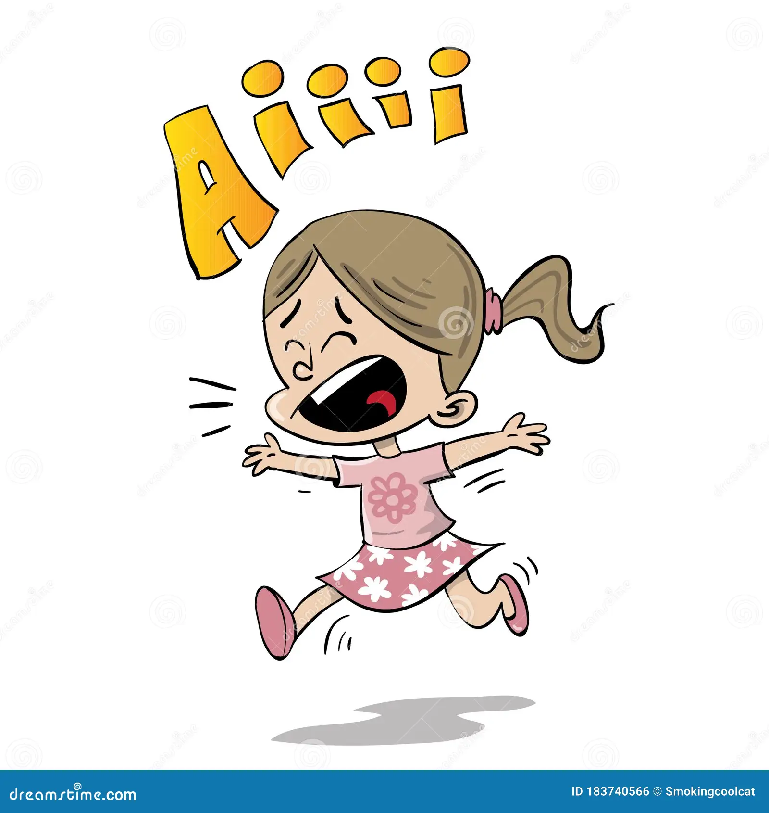

Uma menina estava andando pela sua casa, quando viu uma porta que não estava la antes.
Percebeu que estava numa floresta e ve um garoto estranho
Mesmo passando reto ela deu de cara com o garoto
Ela observa um garoto

Ela fica curiosa, mas com muito medo
Ele não responde, mas fica olhando para ela encantado por sua beleza
o garoto joga a menina no chão
Ela tenta correr
AHAHAHAHAH, o garoto olha profundamente nos olhos da menina
Do lado direito ela consegue jogar o garoto contra a arvore
O lado esquerdo ela fica presa na floresta escura
A linda menina disse "Eu sou seu pior pesadelo" , e então comeu ele vivo e depois destruiu a floresta
Virando de lado rapidamente